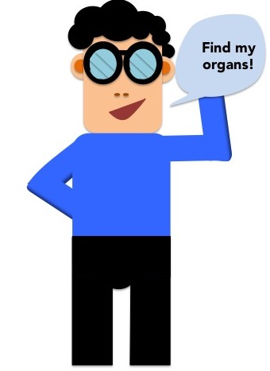

 We know going to hospital can be scary! What's more, it can be really hard to keep track of what's going on. eDocs can help you understand how your body works, so you can also understand what happens when you get sick.